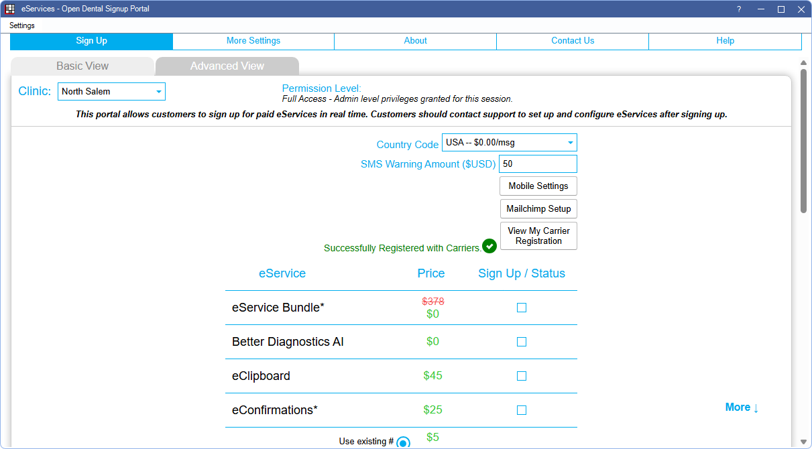

eServices Signup
The Signup Portal is used to sign up for eServices.
In the eServices Setup window, click Signup.
Integrated Texting Options
There are two options available when signing up for integrated texting service.

Offices can use a new number that is automatically assigned, or an existing landline phone number. Only United States and Canadian numbers work with the Use my Landline # option. Mobile and some VOIP numbers are not supported, and not every telecomm provider supports landline texting.
Register with Carriers
All Open Dental offices in the United States that are utilizing integrated text messaging must provide Open Dental their business contact information using the carrier registration form. All fields are required. Existing Open Dental users can visit Register with Carriers for more details.